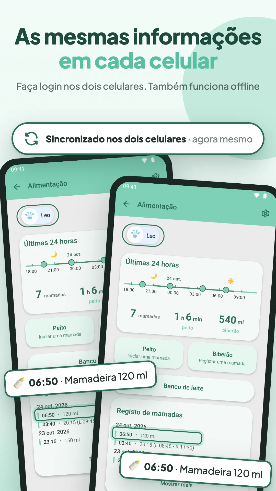

Nesta página · 9 seções
Em resumo
Revezar não é os dois ficarem meio acordados a noite toda: é cada um ter um bloco de sono seguido enquanto o outro está de plantão. O jeito mais simples é dividir a noite em duas (por exemplo, das 21h às 2h e das 2h às 7h, horários só como referência). Se há amamentação, o parceiro pode cuidar de tudo menos da mamada, ou dar uma mamada com leite extraído quando a amamentação já está estabelecida. E anotar mamadas e sonecas num lugar que os dois vejam evita o "quando foi que ele mamou?" a cada troca de turno.
- Objetivo
- Um bloco seguidopara cada um, toda noite
- Turno simples
- Noite dividida21h-2h / 2h-7h
- Com amamentação
- Tudo menos o peitoou uma mamada de leite extraído
- Na troca de turno
- Um registro comumquando mamou e quanto dormiu
Por que revezar funciona
- Cada um pode dormir um bloco sem interrupções. Com um plano, quem não está de plantão dorme sem ser acordado pelo bebê, e quem está sabe que é a sua vez. Um serviço do NHS britânico sugere revezar para dormir sem ser incomodado.
- O outro responsável cria o próprio vínculo. Alimentar, dar banho, trocar e fazer o bebê dormir é um jeito de conhecê-lo e de ficar perto dele. Os estudos associam o envolvimento do pai ou do parceiro nos cuidados a um vínculo mais forte com o bebê.
- Menos peso para quem está se recuperando do parto. Depois do parto o corpo precisa de tempo para se recuperar, e sem um plano quase a noite toda costuma recair sobre a mãe.
- Dormir mal e depressão pós-parto andam juntos. As revisões de estudos encontram que problemas de sono e depressão pós-parto estão associados, embora não se saiba bem o que causa o quê. Proteger o sono dos dois é um jeito simples de cuidar um do outro.
Como dividir a noite com um recém-nascido: 3 horários
Não existe um horário certo. Escolham o que combina com o trabalho de vocês e com a hora em que cada um dorme melhor, testem por uma semana e ajustem. Os horários dos exemplos são apenas uma referência. O importante é que quem não está de plantão consiga dormir de verdade: outro quarto ou protetores de ouvido, e o celular no silencioso.
1. Noite dividida (a mais comum)
Cada um dorme cerca de 5 horas seguidas. Quem acorda cedo para trabalhar fica com o primeiro turno.
2. Uma mamada cada um (mamadeira ou leite extraído)
Útil com um recém-nascido que mama muitas vezes à noite: cada um faz as mamadas do seu período.
3. Noites alternadas ou fins de semana
Costuma funcionar melhor quando o bebê acorda menos. No fim de semana, uma manhã de dormir até mais tarde para cada um.
Como a divisão muda conforme a idade
| Idade | Como são as noites | Turno que costuma funcionar |
|---|---|---|
| 0-3 meses | Mama muitas vezes, de dia e de noite. | Noite dividida ou uma mamada cada um. De dia, sonecas em revezamento para recuperar. |
| 3-6 meses | Começam períodos de sono mais longos, com altos e baixos. | Noite dividida; quem está de plantão também atende o primeiro despertar. |
| 6-12 meses | Menos mamadas à noite; despertares por dentes, regressões ou doença. | Noites alternadas, e o outro de reforço nas noites ruins. |
Essas idades são só uma referência: cada bebê tem o seu ritmo e acordar à noite é normal durante todo o primeiro ano. Para saber quanto o seu bebê deveria dormir em cada idade, veja a nossa rotina de sono do bebê por idade, e para organizar o resto do dia com um recém-nascido, o guia da rotina diária do recém-nascido.
A divisão durante o dia também conta
As noites pesam mais, mas o cansaço se acumula com todo o resto. Dividir tarefas fixas evita ter que negociar tudo todo dia:
| Tarefa | Exemplo de divisão |
|---|---|
| Banho | Sempre a mesma pessoa: vira o momento dela com o bebê. |
| Rotina de dormir | Em dias alternados, para que o bebê durma com os dois. |
| Comidas sólidas (a partir dos 6 meses) | Quem não amamenta cuida do jantar. |
| Consultas com o pediatra e vacinas | Quem puder ir; o outro lê as anotações depois. |
| Casa: compras, jantares, roupa lavada | Quem teve o turno mais pesado da noite faz menos nesse dia. |
Se há amamentação
A amamentação não impede de revezar; ela muda o que cada um faz.
- Tudo menos o peito: o parceiro levanta, troca a fralda, leva o bebê para a cama para a mamada, faz o bebê arrotar e o coloca para dormir de novo. A mãe só amamenta e continua dormindo. O NHS resume assim: o parceiro pode cuidar das fraldas e de vestir o bebê pela manhã para que a mãe volte a dormir.
- Uma mamada com leite extraído: quando a amamentação está bem estabelecida, o parceiro pode de vez em quando dar uma mamada da noite na mamadeira para que a mãe durma um bloco mais longo. Se vocês têm dúvidas sobre quando começar com a mamadeira, perguntem à enfermeira obstetra ou a uma consultora em amamentação.
- Para evitar os seios muito cheios: a produção de leite se adapta ao que o bebê pede, e se o seio passa muitas horas sem ser esvaziado pode ficar muito cheio ou desconfortável. Por isso muitas mães extraem um pouco de leite perto do horário da mamada que o parceiro faz, e esse mesmo leite é o que se oferece. Extrair leite também serve para aliviar um seio desconfortavelmente cheio.
Se vocês têm dúvidas, uma enfermeira obstetra ou uma consultora em amamentação ajuda a encaixar isso com o seu bebê.
A troca de turno sem perguntas
Às 2 da manhã ninguém lembra quando o bebê mamou. Entrem os dois no Raffy com a mesma conta Google (Configurações → Conta e sincronização) e os dois verão as mesmas mamadas e as mesmas sonecas no celular. A sincronização é automática, mas não instantânea: dê alguns instantes se você acabou de anotar algo. É grátis.

Se vocês ainda não usam nenhum app, comparamos as opções em os melhores apps de acompanhamento do bebê para Android.
Segurança e quando pedir ajuda
- Nunca durma com o bebê no sofá ou na poltrona. O risco de morte súbita é muito maior quando um bebê dorme com um adulto num sofá ou numa poltrona. Se você sentir os olhos fechando durante a mamada, coloque o bebê no berço ou acorde o seu parceiro.
- Se for dirigir no dia seguinte depois de uma noite de plantão muito ruim, deixe o outro dirigir ou espere estar mais descansado.
- Peça ajuda se um dos dois estiver triste ou sem esperança quase todos os dias, não sentir prazer em nada, não conseguir dormir nem quando o bebê dorme, ou tiver pensamentos de se machucar ou de machucar o bebê. E isso não acontece só com as mães: nos estudos, cerca de 10% dos pais tiveram depressão durante a gravidez ou no primeiro ano do bebê, e é mais frequente por volta dos 3 a 6 meses.
- Para quem ligar: a sua enfermeira obstetra, o seu médico de família ou o pediatra. Se houver pensamentos de se machucar, ligue para o CVV no 188 (gratuito, 24 horas por dia) ou para o SAMU no 192 em caso de emergência.
Este artigo é educativo e não substitui a avaliação de um profissional de saúde.
Perguntas frequentes
Como dividir as noites com um recém-nascido?
O mais simples é dividir a noite em dois períodos de cerca de 5 horas (por exemplo, das 21h às 2h e das 2h às 7h). Quem está de plantão atende todos os despertares do seu período e o outro dorme sem interrupções.
O parceiro pode revezar se há amamentação?
Pode. Ele pode cuidar de tudo menos da mamada (trocar, arrotar, fazer dormir de novo) ou, quando a amamentação está estabelecida, dar uma mamada com leite extraído. Nesse caso, convém que a mãe extraia um pouco de leite perto desse horário para que o seio não fique desconfortavelmente cheio.
É melhor alternar as noites ou dividir cada noite?
Com um recém-nascido costuma funcionar melhor dividir cada noite, porque ninguém aguenta uma noite inteira de mamadas frequentes. Quando o bebê acorda menos, as noites alternadas permitem que cada um durma uma noite completa.
Como saber o que aconteceu no turno do outro?
Anotando cada mamada e cada soneca num lugar que os dois vejam, como um app de acompanhamento compartilhado. Assim a troca de turno não depende do que alguém meio dormindo consegue lembrar.
E se um dos dois trabalha fora de casa?
Quem trabalha pode ficar com o primeiro período da noite e dormir direto a segunda metade, e compensar com mais tarefas à tarde e no fim de semana. O importante é que a divisão seja decidida pelos dois e revista a cada poucas semanas.
Fontes
- NHS (Reino Unido)Sleep and tiredness after having a baby (em inglês)
- Ready to Relate · Bradford District Care (NHS)Understanding your baby's sleep (em inglês)
- NHS (Reino Unido)Expressing and storing breast milk (em inglês)
- NHS (Reino Unido)Postnatal depression (em inglês)
- Associação Espanhola de Pediatria · Comitê de Aleitamento MaternoRecomendações sobre aleitamento materno (em espanhol)
- American Academy of Pediatrics · HealthyChildren.orgA parent's guide to safe sleep (em inglês)
- Health Service Executive (Irlanda)Recovering after the birth (em inglês)
- Centro de Valorização da Vida (CVV)CVV: apoio emocional e prevenção do suicídio, 188
- Ministério da SaúdeSAMU 192
- JAMA (2010)Paulson e Bazemore. Prenatal and postpartum depression in fathers and its association with maternal depression: a meta-analysis (em inglês)
- JOGNN (2015)Bhati e Richards. A systematic review of the relationship between postpartum sleep disturbance and postpartum depression (em inglês)
- Family Practice (2025)Yıldırım e Şahin. Does father involvement affect attachment and maternal depression and quality of life? Ensaio randomizado (em inglês)
- Irish Journal of Medical Science (2026)Akça e Tuncay. Fathers' involvement in infant care and infant attachment levels (em inglês)
Revisamos este artigo com base nestas fontes em 17 nov 2026. Conteúdo educativo, não é orientação médica. Política editorial